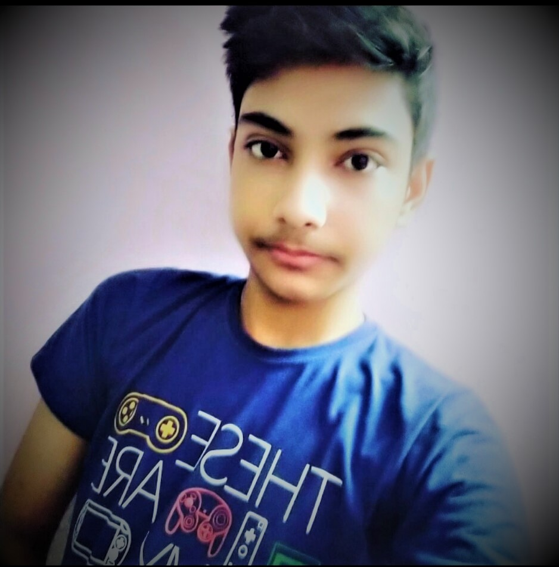

~Vaibhav `Mehta
कुछ मीठी सी ठंडक है आज इन हवाओं में, शायद दोस्तो की यादों का कमरा खुला रह गया है। अच्छे दोस्त को रूठने पर हमेशा मनाना चाहिए। क्योंकि वो कमीना हमारे सारे राज़ जानता होता है। लोग कहते हैं कि इतनी दोस्ती मत करो कि दोस्ती दिल पर सवार हो जाए! हम कहते हैं कि दोस्ती इतनी करो कि दुश्मन को भी तुमसे प्यार हो जाए!

दोस्ती और पैसा : बचपन के दोस्तों की कहानी | True Friendship।एक गाँव में रमन और राघव नाम के दो दोस्त रहा करते थे. रमन धनी परिवार का था और राघव गरीब. हैसियत में अंतर होने के बावजूद दोनों पक्के दोस्त थे. एक साथ स्कूल जाते, खेलते, खाते-पीते, बातें करते. उनका अधिकांश समय एक-दूसरे के साथ ही गुजरता. समय बीता और दोनों बड़े हो गए. रमन ने अपना पारिवारिक व्यवसाय संभाल लिया और राघव ने एक छोटी सी नौकरी तलाश ली. जिम्मेदारियों का बोझ सिर पर आने के बाद दोनों के लिए एक-दूसरे के साथ पहले जैसा समय गुज़ार पाना संभव नहीं था. जब मौका मिलता, तो ज़रूर उनकी मुलाकातें होती. एक दिन रमन को पता चला कि राघव बीमार है. वह उसे देखने उसके घर चला आया. हाल-चाल पूछने के बाद रमन वहाँ अधिक देर रुका नहीं. उसने अपनी जेब से कुछ पैसे निकाले और उसे राघव के हाथ में थमाकर वापस चला गया. राघव को रमन के इस व्यवहार पर बहुत दुःख हुआ. लेकिन वह कुछ बोला नहीं. ठीक होने के बाद उसने कड़ी मेहनत की और पैसों का प्रबंध कर रमन के पैसे लौटा दिए. कुछ ही दिन बीते ही थे कि रमन बीमार पड़ गया है. जब राघव को रमन के बारे में मालूम चला, तो वह अपना काम छोड़ भागा-भागा रमन के पास गया और तब तक उसके साथ रहा, जब तक वह ठीक नहीं हो गया. राघव का यह व्यवहार रमन को उसकी गलती का अहसास करा गया. वह ग्लानि से भर उठा. एक दिन वह राघव के घर गया और उससे अपने किये की माफ़ी मांगते हुए बोला, दोस्त! जब तुम बीमार पड़े थे, तो मैं तुम्हें पैसे देकर चला आया था. लेकिन जब मैं बीमार पड़ा, तो तुम मेरे साथ रहे. मेरा हर तरह से ख्याल रखा. मुझे अपने किये पर बहुत शर्मिंदगी है. मुझे माफ़ कर दो.राघव ने रमन को गले से लगा लिया और बोला, कोई बात नहीं दोस्त. मैं ख़ुश हूँ कि तुम्हें ये अहसास हो गया कि दोस्ती में पैसा मायने नहीं रखता, बल्कि एक-दूसरे के प्रति प्रेम और एक-दूसरे की परवाह मायने रखती है सीख = पैसों से तोलकर दोस्ती को शर्मिंदा न करें. दोस्ती का आधार प्रेम, विश्वास और एक-दूसरे की परवाह है.
`Vaibhav.~Mehta